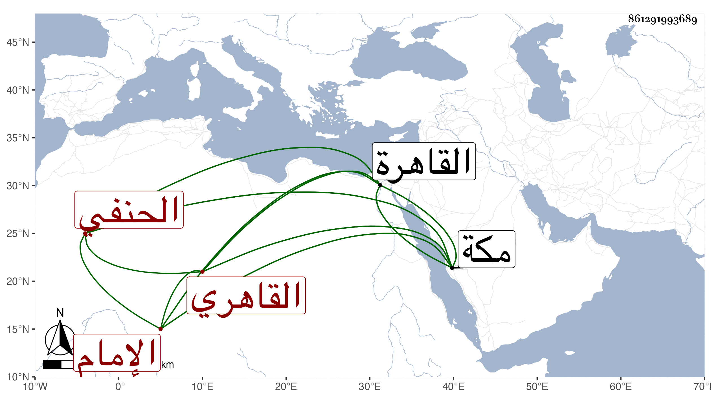

0902Sakhawi.DawLamic.ITO20230111-ara1.EIS1600.861291993689
Biography ID: 861291993689
191
محمد بن أحمد بن محمد بن محمد المحب بن الشهاب القاهري الحنفي الماضي أبوه ويعرف بابن المسدى وبالمحب الإمام . ولد في سابع عشرى رمضان سنة أربعين وثمانمائة بالقاهرة وحفظ القرآن وتلا به بمكة للسبع علي علي الديروطي وعمر النجار وقرأ في الفقه على إمام الحنفية الشريف البخاري ، وأقام بمكة أربع سنين وصار بعد أحد مؤذنيها ثم عاد إلى القاهرة وحضر دروس الأمين الأقصرائي وأخذ القراءات أيضا عن الشمس بن الحمصاني والتاج السكندري وخدم مؤذنا بل إماما للظاهر خشقدم قبل سلطنته مع إقراء مماليكه ونحوهم وعظم اختصاصه به وصلح حاله بعد تقلله فلما تملك صار أحد أئمته ثم أعطاه الأشرف قايتباي مشيخة تربة خشقدم بعد الشريف المغربي ، وقدم على الجوجري ، واستمر على الإمامة ، وقرأ في غضون ذلك في الفقه على البرهان الكركي وكذا ظنا على جاره في الروضة تغرى بردى ، ويتأنق في الثياب والمركوب والخدم مع عقل وسكون وإقبال على شأنه . وصاهر الشمس بن القطان المنزلي السكري على ابنته فلما كان أثناء شوال سنة خمس وتسعين طرده بن السطان عن الإمامة بالسبب المشار إليه في الحوادث وبالغ في تمقته بالأعراض عن الاشتغال وإقباله على الصيد وراجعه فيه غير واحد فما أذعن نعم أنعم عليه بخمسمائة دينار لوفاء دينه . وعلى كل حال فنعم الرجل عقلا وأدبا جبره الله .
